My First Java Game (Just to get my feet wet)
- [Scroll to bottom for screen shots]
- Thanks to Ty(Voomert) for the awesome sprites!
Change log
https://github.com/thefiscster510/glide/commits/master
Download (v1.0.37b [Build 239])
Windows: Download as Exe
Linux / Mac: Download as Jar
How To Play
As you play Glide, You will notice quite a few different things in the game. This wiki page attempts to explain as much as possible. Below you can read more about bomb spawning, enemy spawning, different types of drops and weapons, game objectives, sounds, menus, Heads Up Display and much more.
Objective
Your objective, is to destroy all of the bombs that spawn before they reach the bottom of the screen. There will be one bomb per level, and once you destroy the last bomb (At the end of level 10), you win the game.
Drops
There are several types of drops you can get in the game, below, you will see a detailed description of each. Drop rarity is based on a 2:1 randomized ratio.
-
 Diamonds
Diamonds Diamonds are ONLY dropped by yellow enemies. Blue diamonds will give you a 15 point increase. Red diamons will fully restore your health. And green diamonds will resupply your MDB supply.
-
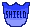Shield
Shield will give you a glowing edge around your craft. It will allow you to go about unharmed by enemy bullets and collisions. When you collide with an enemy, they will die, and you will not lose any health. These collisions will also destroy a bomb in a single hit. The Shield Powerup will last 16 seconds.
-
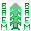Beam
The Beam Powerup will give you a constant beam of Plasma Lasers for 8 seconds.
-
 MDB
MDBThe MDB Drop (Multi Directional Buster) will add your MDB supply. (MDB's will be explained further down in the "Weapons" Section.
-
 Sweeper-Detonator
Sweeper-DetonatorThe Sweeper-Detonator will at to your Sweeper-Detonator Supploy. (Sweeper-Detonators's will be explained further down in the "Weapons" Section.
-
Health Point
The Health Point drop will replenish your health after being harmed by enemies or enemy Plasma Cannons.
Weapons
There are 4 main weapons used in this game. (3 that the player can use).
-
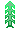Plasma Cannon
The Plasma Cannon is your main weapon. It will destroy most enemies in a single burst, and is the base weapons for the Beam Powerup. Enemies can also use this weapon, However they can not use the Beam Powerup. Gold enemies will fire twice as often as red, and Bombs will not fire at all.
-
MDB
The MDB is a limited weapon that you can only carry 5 of at a time. When fired, It will shoot a bomb in every direction outward from your current player location. The bombs it fires, will destroy anything in one hit.
-
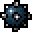Bombs
Bombs are not weapons that the player can use. They are enemy weapons, that will decide weather you win or lose the game. There are 10 bombs per game. 1 per level. If a player collides with a bomb, they will immediately die. If the bomb reaches the bottom of the screen (Your Mother Ship) you will lose the game. The main objective of this game is to destroy all 10 of these bombs, before the enemies destroy you.
Sweeper-Detonator
Sweeper-Detonators are weapons that will spread accross the level and destroy everything in their path. They are the rarest drop, and you can only carry two. They, however, are the most powerful player used weapon in the game.
Enemies
There are 3 types of enemies (Soon to be more) in the game.
-
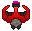Invaders
Invaders are the basic enemy you will encounter. They will move at a randomized speed. The faster the enemy is moving, the more points you will get for destroying it. You will get anywhere from 1 - 4 points for destroying an invader.
-
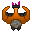Speed Demons
Speed Demons are the golden Invaders (Top Ranking). They will move faster than any Invader could, and drop Diamonds. You will get 5 points for any Speed Demon you destroy, and the diamond drop they drop will give you 15 more points.
-
Destructors
Destructors are the bombs that the main objective is based off of. They will take 15 Plasma Lasers to destroy, or a concentrated beam attack, or one MDB. Stop these from reaching the bottom to win the game.
Player
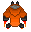The player will have 2 states, one by default is your normal ship. The other is the "Over Heated" [ 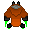 ] ship, shown when you're using the "Beam" powerup.
Heads Up Display (HUD)
Your main HUD will have a few elements needed to understand the game.
-
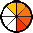Health Bar
In the top right, you will see your health bar, indicated by 5 bars of colors. Green means full health. Keep an eye on that.
-
Level / Score Indicators
In the top left and center of the screen, You will see two numbers. In the top left, is your current score. In the center, the level that you are currently working through.
-
MDB Meter
In the bottom left of your screen, you will see a meter. It will tell you how many MDB charges you currently have in your ships cargo bay. When you fire one, the meter will go down. If your ship is currently carrying the maximum load of MDB Charges, it will say "MAX" next to it.
-
Sweeper-Detonator Meter
In the bottom left of your screen, you will see a meter. It will tell you how many Sweeper-Detonator charges you currently have in your ships cargo bay. When you fire one, the meter will go down. If your ship is currently carrying the maximum load of Sweeper-Detonator Charges, it will say "MAX" next to it.
-
Bomb Count
Next to the MDB meter you will see a number next to a bomb. This tells you how many bombs you have destroyed. Once this reaches 10, you've won the game.
-
Debug Display
On the bottom right of the screen you will see a few different readings.
1. MOS = Meteors being rendered out by the system
2. DOS = Drops Being rendered out by the system
3. BOS = Weapon projectiles being rendered out by the system
4. EOS = Enemy entities being redered out by the system
5. TPS = Ticks per second that the system is currently running on
6. FPS = The Systems current Frames Per Second
Levels
The game consists of 10 levels. Each level, is more difficult. The higher the level goes, the more often enemies will spawn. Once you reach level 10, there will be anywhere from 40 - 55 enemies on the screen at any given time (Indicated in the debug at the bottom of the screen under EOS). The level will change every time a bomb is spawned, which is about every 30 seconds.
Controls
Under the main menu, Select 'Options'. Next, Select 'Controls'. Here, you can find a detailed list of controls. (Sadly, At this time controls cannot be changed. We may however change that in future updates.. We'll see.)
Sounds
In the game, there are quite a few sounds you'll hear. These (And the background music) can be enabled / disabled via the 'Options' menu under the Main Menu.
Cheats
There are several cheats that you can use in the game. To open the cheat console, Press 'Enter' while in game
Current Cheats:1. Beam Cheat - '20120614'
2. Shield Cheat - '19951122'
3. Health Cheat - '11232013'
4. MDB Cheat - '26435'
5. Sweeper-Detonator Cheat - '4568353669'
ScreenShots:
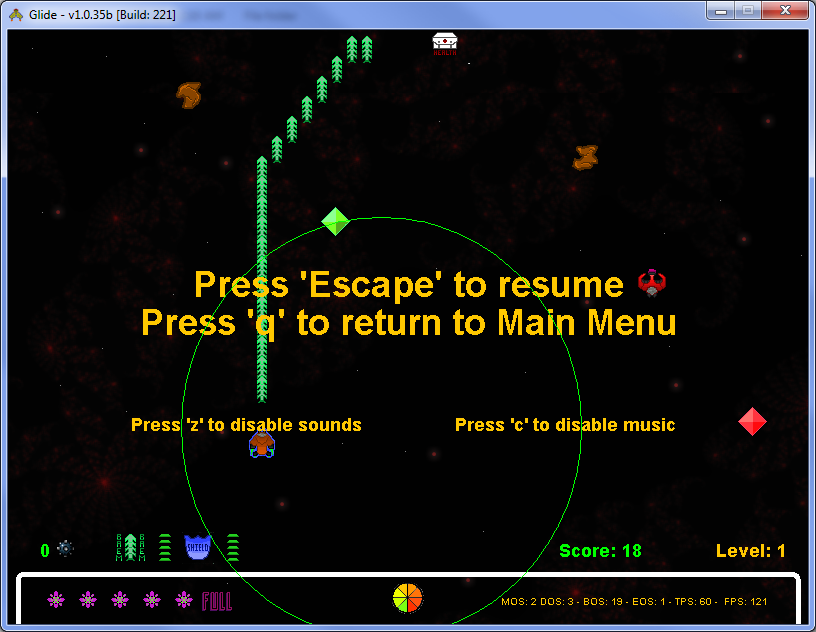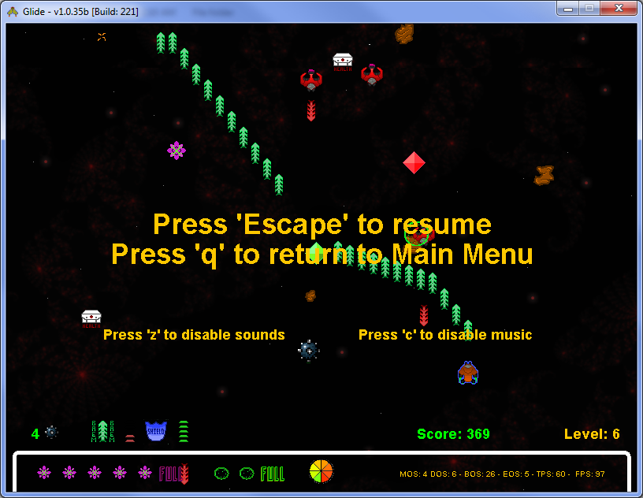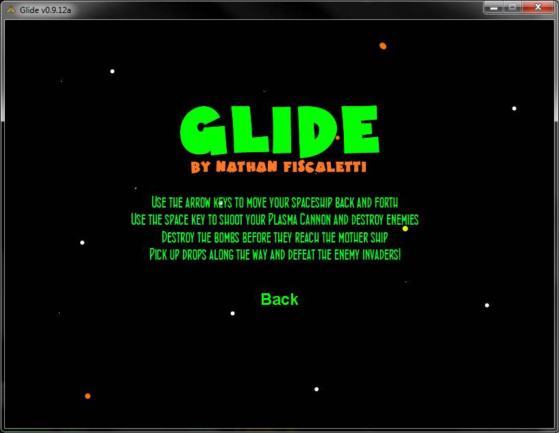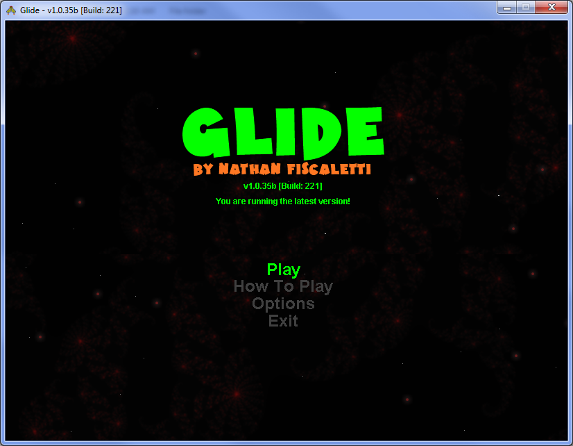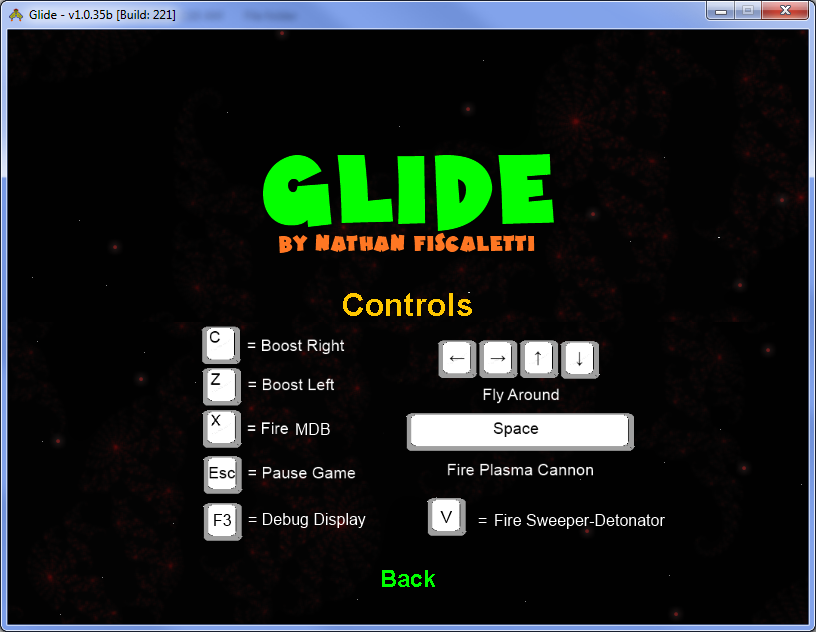